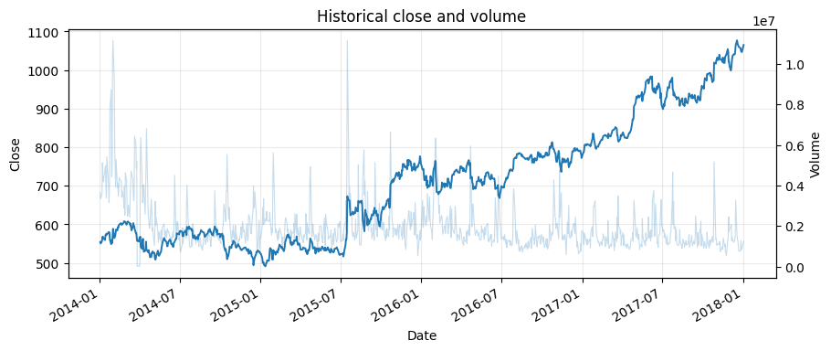
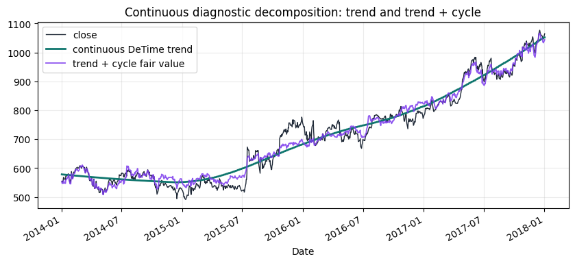
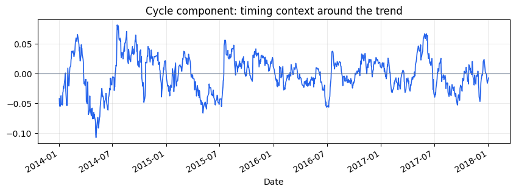
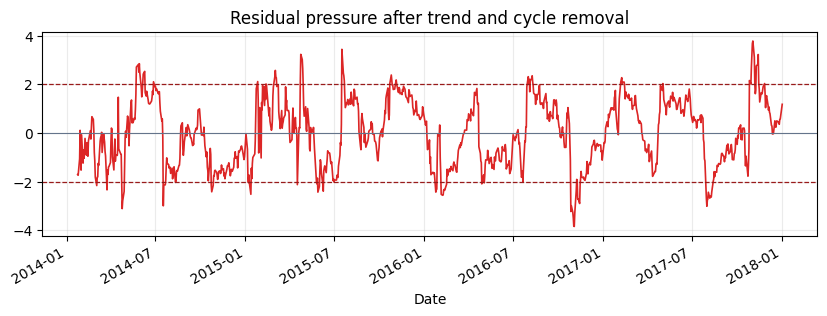
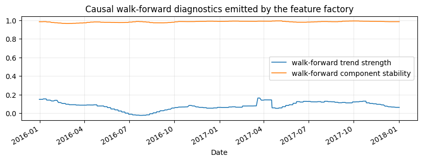
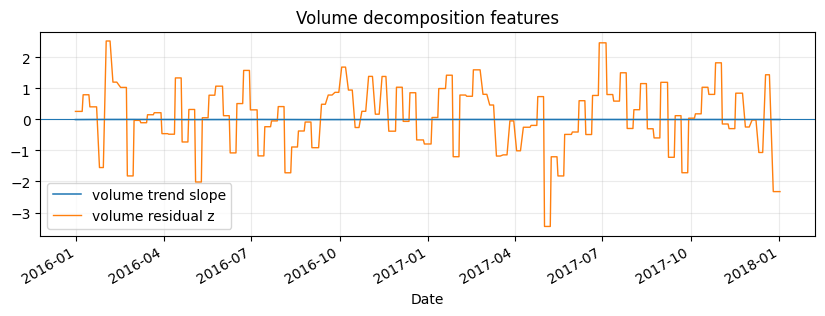
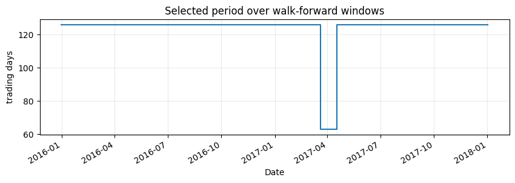

Tutorial 01 - Real market data and the DeTime feature factory
examples/notebooks/quant_trading/01_market_data_and_decomposition_feature_factory.ipynb and includes markdown cells, code cells, stdout, tables, and captured figures from the committed notebook.
Tutorial Navigation
| Track | Tutorial notebook |
|---|---|
| Roadmap | Tutorial 00 - Roadmap |
| Strategy Lab | 01 Trend-Following Lab |
| Tutorial Sequence | 01 Real Market Data and Feature Factory |
| Tutorial Sequence | 02 Decomposition-aware MA and MACD |
| Strategy Lab | 02 Oscillation-Reversion Lab |
| Strategy Expansion | 03 Method-Specific Variants |
| Tutorial Sequence | 03 Residual Mean Reversion |
| Strategy Expansion | 04 Component Pair Trading |
| Tutorial Sequence | 04 Donchian Breakout |
| Tutorial Sequence | 05 Pair-Spread Stat-Arb |
| Tutorial Sequence | 06 Cross-Sectional Rotation |
| Native SSA Replay | 07 Native SSA High-Return / Low-Drawdown |
Executed Notebook
This tutorial builds the data and feature layer used by the rest of the quant tutorial. The working idea is simple: a price or volume series is decomposed into trend, cycle and residual structure, then each component becomes a trading feature with a clear job.
The rendered notebook uses the bundled historical GOOG Yahoo Finance sample from the reference algorithmic-trading material. The same functions also support Yahoo Finance downloads through yfinance; the downloader script writes cached OHLCV panels for larger universes.
Two views are intentionally separated: a continuous diagnostic decomposition for visual intuition, and a causal walk-forward feature table for backtests. Sparse walk-forward features should not be judged as a smooth trend plot.
from pathlib import Path
import matplotlib.pyplot as plt
import numpy as np
import pandas as pd
from IPython.display import display
from examples.quant_trading.data import (
load_sample_goog_ohlcv,
market_data_manifest,
ohlcv_audit_report,
)
from examples.quant_trading.decomposition_features import (
build_feature_table,
estimate_dominant_period,
feature_coverage_report,
)
from examples.quant_trading.features import decompose_one_series, walkforward_decompose_ohlcv
from examples.quant_trading.validation import write_run_audit
pd.set_option("display.max_columns", 20)
REPORT_DIR = Path("examples/quant_trading/reports")
REPORT_DIR.mkdir(parents=True, exist_ok=True)
1. Load an auditable OHLCV table
For the documentation build we use a historical GOOG OHLCV table already stored in the repository. A live run can replace this object with fetch_yahoo_ohlcv_panel([...]) or the command-line downloader.
ohlcv_single = load_sample_goog_ohlcv(trim_start="2014-01-01")
ticker = ohlcv_single.attrs.get("symbol", "GOOG")
ohlcv = {
field: ohlcv_single[[field]].rename(columns={field: ticker})
for field in ["Open", "High", "Low", "Close", "Volume"]
}
close = ohlcv["Close"]
volume = ohlcv["Volume"]
audit = ohlcv_audit_report(ohlcv)
manifest = market_data_manifest(
tickers=[ticker],
start=str(close.index.min().date()),
end=str(close.index.max().date()),
interval="1d",
source=ohlcv_single.attrs.get("source", "bundled historical OHLCV sample"),
)
display(audit)
display(manifest)
| ticker | first_timestamp | last_timestamp | observations | close_missing_ratio | volume_missing_ratio | zero_volume_ratio | min_close | max_close | median_volume | |
|---|---|---|---|---|---|---|---|---|---|---|
| 0 | GOOG | 2014-01-02 | 2018-01-02 | 1008 | 0.0 | 0.0 | 0.0 | 491.201416 | 1077.140015 | 1624450.0 |
| source | tickers | start | end | interval | auto_adjust | archived_or_vendor_market_data | research_note | |
|---|---|---|---|---|---|---|---|---|
| 0 | Learn-Algorithmic-Trading GOOG Yahoo Finance e... | GOOG | 2014-01-02 | 2018-01-02 | 1d | True | True | Educational source; replace with licensed poin... |
fig, ax1 = plt.subplots(figsize=(10, 4))
close[ticker].plot(ax=ax1, linewidth=1.4, label="close")
ax1.set_title("Historical close and volume")
ax1.set_ylabel("Close")
ax2 = ax1.twinx()
volume[ticker].plot(ax=ax2, alpha=0.25, linewidth=0.8, label="volume")
ax2.set_ylabel("Volume")
ax1.grid(True, alpha=0.25)
plt.show()

2. Estimate the dominant trading horizon
The period estimator chooses from interpretable trading horizons. The selected value is a feature, not a tuning secret: it is written into the audit table and shown in the notebook. The candidate set focuses on quarter, half-year, and one-year trading horizons so the tutorial does not mistake short oscillatory noise for a stable market cycle.
period_estimate = estimate_dominant_period(close[ticker], candidates=(63, 126, 252), use_log=True)
period_summary = pd.DataFrame([period_estimate.__dict__])
display(period_summary)
| period | score | source | candidates | |
|---|---|---|---|---|
| 0 | 252 | 13.916399 | acf_periodogram_candidates | (63, 126, 252) |
3. Build walk-forward price and volume features
The feature factory recomputes decomposition on rolling training windows and carries the latest component state forward until the next recomputation date. Price and volume are handled with the same component vocabulary.
For daily bars, this tutorial uses a two-year training window and weekly recomputation. A monthly stride is faster, but it creates too few emitted feature points for explanatory plots and can make the trend look like a staircase. The backtest feature table remains causal because every row is generated from trailing data only.
features = walkforward_decompose_ohlcv(
ohlcv,
method="STL",
period="auto",
period_candidates=(63, 126, 252),
train_window=504,
step=5,
z_window=63,
)
coverage = feature_coverage_report(features)
display(coverage.sort_values(["feature", "asset"]).head(18))
| feature | asset | observations | non_null | coverage | first_valid | last_valid | |
|---|---|---|---|---|---|---|---|
| 16 | component_stability | GOOG | 1008 | 505 | 0.500992 | 2015-12-31 | 2018-01-02 |
| 1 | cycle | GOOG | 1008 | 505 | 0.500992 | 2015-12-31 | 2018-01-02 |
| 9 | cycle_amplitude | GOOG | 1008 | 505 | 0.500992 | 2015-12-31 | 2018-01-02 |
| 10 | cycle_position | GOOG | 1008 | 505 | 0.500992 | 2015-12-31 | 2018-01-02 |
| 8 | cycle_slope | GOOG | 1008 | 505 | 0.500992 | 2015-12-31 | 2018-01-02 |
| 11 | cycle_turn_up | GOOG | 1008 | 505 | 0.500992 | 2015-12-31 | 2018-01-02 |
| 7 | cycle_z | GOOG | 1008 | 505 | 0.500992 | 2015-12-31 | 2018-01-02 |
| 15 | reconstruction_error | GOOG | 1008 | 505 | 0.500992 | 2015-12-31 | 2018-01-02 |
| 2 | residual | GOOG | 1008 | 505 | 0.500992 | 2015-12-31 | 2018-01-02 |
| 13 | residual_abs_z | GOOG | 1008 | 505 | 0.500992 | 2015-12-31 | 2018-01-02 |
| 14 | residual_vol | GOOG | 1008 | 505 | 0.500992 | 2015-12-31 | 2018-01-02 |
| 12 | residual_z | GOOG | 1008 | 505 | 0.500992 | 2015-12-31 | 2018-01-02 |
| 38 | season | GOOG | 1008 | 505 | 0.500992 | 2015-12-31 | 2018-01-02 |
| 39 | season_slope | GOOG | 1008 | 505 | 0.500992 | 2015-12-31 | 2018-01-02 |
| 40 | season_z | GOOG | 1008 | 505 | 0.500992 | 2015-12-31 | 2018-01-02 |
| 17 | selected_period | GOOG | 1008 | 505 | 0.500992 | 2015-12-31 | 2018-01-02 |
| 0 | trend | GOOG | 1008 | 505 | 0.500992 | 2015-12-31 | 2018-01-02 |
| 4 | trend_acceleration | GOOG | 1008 | 505 | 0.500992 | 2015-12-31 | 2018-01-02 |
feature_table = build_feature_table(close, features)
latest = feature_table.tail(5)
display(latest)
| component_stability | cycle | cycle_amplitude | cycle_position | cycle_slope | cycle_turn_up | cycle_z | realized_vol_20 | reconstruction_error | residual | ... | volume_residual_abs_z | volume_residual_vol | volume_residual_z | volume_selected_period | volume_shock | volume_trend | volume_trend_acceleration | volume_trend_gap | volume_trend_slope | volume_trend_strength | |
|---|---|---|---|---|---|---|---|---|---|---|---|---|---|---|---|---|---|---|---|---|---|
| GOOG | GOOG | GOOG | GOOG | GOOG | GOOG | GOOG | GOOG | GOOG | GOOG | ... | GOOG | GOOG | GOOG | GOOG | GOOG | GOOG | GOOG | GOOG | GOOG | GOOG | |
| Date | |||||||||||||||||||||
| 2017-12-26 | 0.985298 | 0.045595 | 0.04378 | 1.041448 | -0.005057 | 0.0 | 0.613782 | 0.151519 | 0.0 | 0.000369 | ... | 2.325871 | 0.124344 | -2.325871 | 126.0 | 2.325871 | 14.055874 | -0.000003 | -0.51401 | -0.00112 | -0.003147 |
| 2017-12-27 | 0.985298 | 0.045595 | 0.04378 | 1.041448 | -0.005057 | 0.0 | 0.613782 | 0.151818 | 0.0 | 0.000369 | ... | 2.325871 | 0.124344 | -2.325871 | 126.0 | 2.325871 | 14.055874 | -0.000003 | -0.51401 | -0.00112 | -0.003147 |
| 2017-12-28 | 0.985298 | 0.045595 | 0.04378 | 1.041448 | -0.005057 | 0.0 | 0.613782 | 0.122569 | 0.0 | 0.000369 | ... | 2.325871 | 0.124344 | -2.325871 | 126.0 | 2.325871 | 14.055874 | -0.000003 | -0.51401 | -0.00112 | -0.003147 |
| 2017-12-29 | 0.985298 | 0.045595 | 0.04378 | 1.041448 | -0.005057 | 0.0 | 0.613782 | 0.122892 | 0.0 | 0.000369 | ... | 2.325871 | 0.124344 | -2.325871 | 126.0 | 2.325871 | 14.055874 | -0.000003 | -0.51401 | -0.00112 | -0.003147 |
| 2018-01-02 | 0.985298 | 0.045595 | 0.04378 | 1.041448 | -0.005057 | 0.0 | 0.613782 | 0.127032 | 0.0 | 0.000369 | ... | 2.325871 | 0.124344 | -2.325871 | 126.0 | 2.325871 | 14.055874 | -0.000003 | -0.51401 | -0.00112 | -0.003147 |
5 rows × 44 columns
4. Inspect the structural components
The plots below use a continuous diagnostic decomposition on the same GOOG series. They are for visual interpretation of trend, cycle, and residual structure. The walk-forward feature table above is the causal input used by strategy notebooks.
diagnostic = decompose_one_series(
close[ticker],
method="STL",
period=int(period_estimate.period),
z_window=63,
transform="log",
)
trend_price = np.exp(diagnostic["trend"])
fair_value = np.exp(diagnostic["trend"] + diagnostic["cycle"])
fig, ax = plt.subplots(figsize=(10, 4))
close[ticker].plot(ax=ax, linewidth=1.0, color="#1f2937", label="close")
trend_price.plot(ax=ax, linewidth=2.0, color="#0f766e", label="continuous DeTime trend")
fair_value.plot(ax=ax, linewidth=1.3, color="#7c3aed", alpha=0.85, label="trend + cycle fair value")
ax.set_title("Continuous diagnostic decomposition: trend and trend + cycle")
ax.legend()
ax.grid(True, alpha=0.25)
plt.show()

fig, ax = plt.subplots(figsize=(10, 3))
diagnostic["cycle"].plot(ax=ax, linewidth=1.2, color="#2563eb")
ax.axhline(0, linewidth=0.8, color="#64748b")
ax.set_title("Cycle component: timing context around the trend")
ax.grid(True, alpha=0.25)
plt.show()

fig, ax = plt.subplots(figsize=(10, 3))
diagnostic["residual_z"].plot(ax=ax, linewidth=1.2, color="#dc2626")
ax.axhline(2.0, linestyle="--", linewidth=0.9, color="#991b1b")
ax.axhline(-2.0, linestyle="--", linewidth=0.9, color="#991b1b")
ax.axhline(0, linewidth=0.8, color="#64748b")
ax.set_title("Residual pressure after trend and cycle removal")
ax.grid(True, alpha=0.25)
plt.show()

fig, ax = plt.subplots(figsize=(10, 3))
features["trend_strength"][ticker].plot(ax=ax, linewidth=1.2, label="walk-forward trend strength")
features["component_stability"][ticker].plot(ax=ax, linewidth=1.2, label="walk-forward component stability")
ax.set_title("Causal walk-forward diagnostics emitted by the feature factory")
ax.legend()
ax.grid(True, alpha=0.25)
plt.show()

fig, ax = plt.subplots(figsize=(10, 3))
features["volume_trend_slope"][ticker].plot(ax=ax, linewidth=1.1, label="volume trend slope")
features["volume_residual_z"][ticker].plot(ax=ax, linewidth=1.0, label="volume residual z")
ax.axhline(0, linewidth=0.8)
ax.set_title("Volume decomposition features")
ax.legend()
ax.grid(True, alpha=0.25)
plt.show()

fig, ax = plt.subplots(figsize=(10, 2.8))
features["selected_period"][ticker].dropna().plot(ax=ax, drawstyle="steps-post")
ax.set_title("Selected period over walk-forward windows")
ax.set_ylabel("trading days")
ax.grid(True, alpha=0.25)
plt.show()

5. Persist the audit outputs
Tutorial 01 writes compact CSV files that later notebooks can reuse: a market-data manifest, a data-audit table and a tail sample of the feature table.
feature_table.tail(60).to_csv(REPORT_DIR / "column_01_feature_table_tail.csv")
paths = write_run_audit(
REPORT_DIR,
data_manifest=manifest,
audit=audit,
strategy_stats=None,
prefix="column_01",
)
summary = pd.DataFrame({"artifact": list(paths), "path": [str(p) for p in paths.values()]})
display(summary)
| artifact | path | |
|---|---|---|
| 0 | manifest | examples\quant_trading\reports\column_01_marke... |
| 1 | data_audit | examples\quant_trading\reports\column_01_data_... |